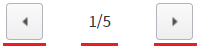

PageControl의 'pagingType' 속성을 사용하여 페이지를 표시하는 UI 유형을 설정한 예제입니다.
설정에 따른 동작은 다음과 같습니다.
"1" : [default] 버튼 + 현재페이지/토탈페이지 + 버튼으로 화면에 구성됩니다.
"2" : 이미지로 화면에 구성됩니다. 모바일 화면에서 주로 사용됩니다.
페이지 유형을 버튼과 페이지 숫자로 구성하기
페이지 유형을 이미지로 구성하기
1
STEP 1: 실행된 결과를 확인합니다.
예제 영역 '(기본 설정) 페이지 유형을 버튼과 페이지 숫자로 구성하기'의 'PageControl'를 확인합니다.버튼과 페이지 숫자로 화면에 구성됩니다.
Image 1.브라우저(Chrome) 실행 예시

1
실행된 결과를 확인합니다.
예제 영역 '페이지 유형을 이미지로 구성하기'의 'PageControl'를 확인합니다.이미지로 화면에 구성됩니다. 페이지 정보는 표시되지 않습니다.
Image 2.브라우저(Chrome) 실행 예시
속성을 정의합니다.
[필수] pagingType="옵션 값"
(옵션 설명)
- "1": [default] 버튼과 페이지 숫자로 화면을 구성합니다.
- "2": 이미지로 화면을 구성합니다.
예시) pagingType="1"
pagingType